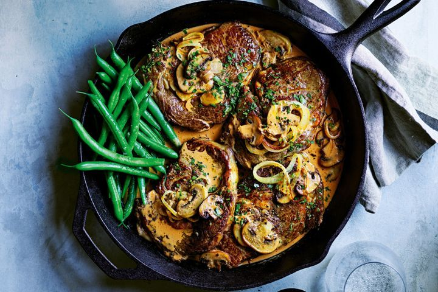

Expert Recipe 1

Important Techniques
N/A
- The techniques used in this recipe for example, deglazing, sautueing, and pan searing should learned already and is a testament to your cooking skills
- Place porcini mushrooms in a small heatproof bowl. Cover with the boiling water. Set aside for 20 mins to soak.
- Meanwhile, heat half the oil in a large frying pan over medium heat. Add the onion and cook, stirring, for 5 mins or until onion softens. Add the garlic and stir for 1 min or until aromatic. Transfer to a heatproof bowl.
- Heat half the remaining oil in the pan over high heat. Add brown and cup mushroom. Cook, stirring occasionally, for 5 mins or until the mushroom is golden brown and just tender. Add to the onion in the bowl.
- Heat the remaining oil in the pan. Season the steaks well. Add to the pan and cook for 2-3 mins each side for medium-rare or until cooked to your liking. Transfer to a plate and loosely cover with foil.
- Add the brandy, wine or stock to the pan and stir with a wooden spoon, scraping the base of the pan. Cook for 2 mins or until the liquid reduces by half. Add the porcini mushrooms and liquid and bring to the boil. Cook, stirring occasionally, for 4 mins or until the mixture reduces by half. Add the onion mixture, paprika, tomato paste, mustard, Worcestershire sauce and stir to combine. Cook for 2 mins or until the mixture is well combined and heated through. Add the sour cream and cook, stirring, for 2-3 mins or until the sauce boils and thickens slightly. Remove from heat. Add the steaks and turn to coat in the sauce.
- Season and serve immediately with steamed green beans.
Recipe List
- 20g dried porcini mushrooms
- 1 cup (250ml) boiling water
- 1 tbsp olive oil
- 1 brown onion, thinly sliced
- 2 garlic cloves, crushed
- 200g brown mushrooms, thickly sliced
- 200g cup mushrooms, thickly sliced
- 4 Coles Australian No Added Hormones Beef Scotch Fillet Steaks
- 1/2 cup (125ml) brandy, marsala wine or beef stock
- 3 tsp ground paprika
- 1 tbsp tomato paste
- 1 tbsp Dijon mustard
- 1 tbsp Worcestershire sauce
- 300g sour cream
- Steamed green beans, to serve